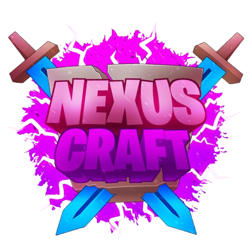
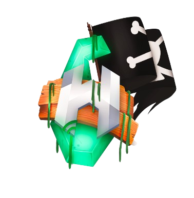
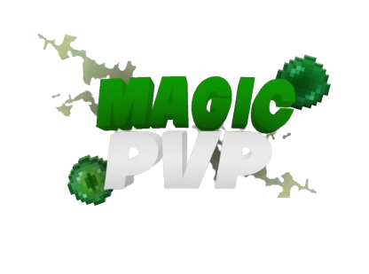

01 / 10
01 / 10Supporto · Gestione · Social
CoralMC
SrMod · SS Verified · Community Manager · Social Media Manager · Survival Staff · Auth Staff
Vedi i proofUno spazio per idee, progetti e movimento.
Moderazione, supporto, gestione e comunicazione: i ruoli che ho ricoperto nei server e nelle community con cui ho collaborato.
01 / COMMUNITY

Ogni progetto è una sfida diversa. Filtra le esperienze per scoprire dove ho lavorato e con quale responsabilità.
01 / 10SrMod · SS Verified · Community Manager · Social Media Manager · Survival Staff · Auth Staff
Vedi i proofHelper · SS Verified

03 / 10SrMod · Supporter

05 / 10 06 / 10
06 / 10Helper
 07 / 10
07 / 10Admin · Staff Manager · Social Media Manager · Discord Manager
08 / 10 09 / 10
09 / 10